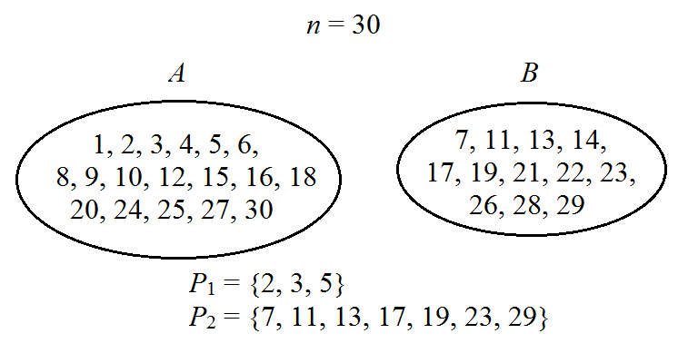
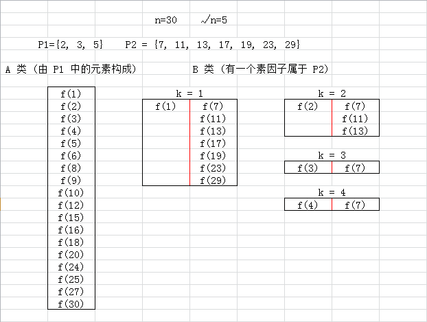
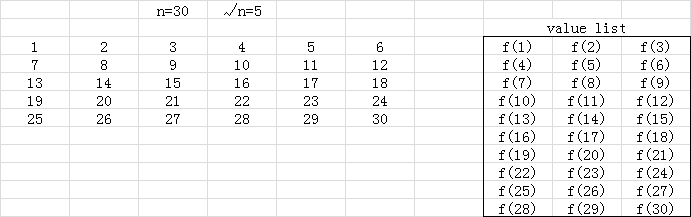
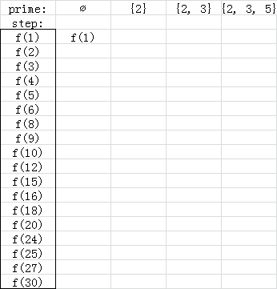
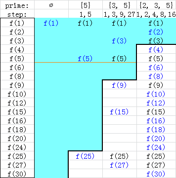

定义 $d(n)$ 为 $n$ 的正因数的个数，比如 $d(2) = 2, d(6) = 4$。
令 $$ S_3(n) = \sum_{i=1}^n d(i^3) $$
给定 $n$，求 $S_3(n)$。
第一行包含一个正整数 $T$ ($T \leq 10000$)，表示数据组数。
接下来的 $T$ 行，每行包含一个正整数 $n$ ($n \leq 10^{11}$)。
对于每个 $n$，输出一行一个整数，表示 $S_3(n)$ 的值。
可以看出，记 $d_3(i) = d(i^3)$，则 $d_3$ 是积性函数 (因为如果 $(a, b) = 1$，则 $(a^3, b^3) = 1$，因此 $d_3(ab) = d(a^3 b^3) = d(a^3) d(b^3) = d_3(a) d_3(b)$)，因此原式其实就是一个积性函数求和的问题。
看到积性函数求和，我们可以很快想到杜教筛。它是一种基于和式变换的求和方法，对于一个函数 $f$，如果存在易于求和的函数 $g$ 和 $h$，使得 $f \ast g = h$，则可以在 $O \left( n^{2/3} \right)$ 的时间内求得 $f$ 的前 $n$ 项和。
不过，本题中的 $f(n) = d(n^3)$，就很难找到什么函数与它的卷积易于求和，因此出现了一种新的算法——洲阁筛。
洲阁筛的核心思想不是和式变换，而是将素因子分类，根据与 $\sqrt n$ 的大小关系分成两类，然后结合 Hash 表和分块来实现，是一种积性函数的求和方式。(吐槽：我怎么感觉洲阁筛才有点像筛法啊，杜教筛根本称不上是一种筛法，应该叫做杜氏求和法)
它的使用条件是：$f(n)$ 为积性函数，且对于素数 $p$，$f(p)$ 为关于 $p$ 的低阶多项式，且 $f(p^c)$ 亦容易计算。具体是为什么呢？我们来看一看它的实现吧。
前面已经提到过，将素因子根据与 $\sqrt n$ 的大小关系分成两类，一类为 $\leq \sqrt n$ 的 (记为 $P_1$)，另一类为满足在 $\sqrt n < p \leq n$ 的 (记为 $P_2$)，并记 $P = P_1 \cup P_2$。
可以发现，$1 \sim n$ 中的每一个整数至多有一个素因子在 $P_2$ 中。因此，我们也可以将这 $n$ 个正整数分为两类——一类为有一个素因子在 $P_2$ 中的整数 (记为 $B$ 类)，另一位为没有素因子在 $P_2$ 中 (即所有素因子都在 $P_1$ 中，记为 $A$ 类)，然后对两类数分别求和。如下图所示：
然后我们发现，对于 $B$ 中任意整数 $b$，在 $P_2$ 中都有唯一的素数 $p \mid b$，不妨记 $b = pk$，那么 $k \in A$。
先考虑对 $B$ 中元素求和。换个枚举方式，可以考虑枚举这个 $k$ (显然 $k < \sqrt n$)，然后枚举 $P_2$ 中的 $p$，满足 $pk \leq n$，对它求和。形式化的讲，即考虑每个 $1 \leq k < \sqrt n$，求出 $$ \sum_{\sqrt n < p \leq \left \lfloor n/k \right \rfloor \\ \quad p \in P} f(pk) $$
由于 $p$ 是素数，因此 $(p, k) = 1$，故所求转化为了 $$ f(k) \cdot \left( \sum_{\sqrt n < p \leq \left \lfloor n/k \right \rfloor \\ \quad p \in P} f(p) \right) (1 \leq k < \sqrt n) $$
对于 $A$ 中元素，只需求所有素因子都在 $P_1$ 中的数的函数值之和即可，即 $$ \sum_{\;\; 1 \leq i \leq n \\ \forall p \in P_2, p \not\mid i} f(i) $$
具体地讲，最终的和式被分成下图所示的两部分分别求和 (红竖线代表左边乘以右边的总和)：
对 $B$ 类元素求和。首先，显然可以线性筛出 $k = 1 \sim \sqrt n$ 时 $f(k)$ 的值，因此我们需要求
$$ \sum_{\sqrt n < p \leq i \\ \quad p \in P} f(p) $$
的值。其中 $i = \left \lfloor \dfrac nk \right \rfloor$，只有 $O(\sqrt n)$ 种取值。
记住，刚才提到过，洲阁筛是筛法，而杜教筛是求和法，因此我们要从筛法的角度看问题。
此时应该能想到 Eratosthenes 筛法。即对 $n$ 以内的数来说，如果我们把 $P_1$ 中的素数 (即 $\leq \sqrt n$ 中的素数) 以及它们的倍数筛完后，剩下的数就是那些 $P_2$ 中素数和 $1$。
仔细观察下面图片描述的过程，对理解洲阁筛的思想有很大帮助：
有没有发现这个 Eratosthenes 筛法和平常写的 Eratosthenes 筛法有什么不同？对。这个 Eratosthenes 筛法不会重复的筛一个数。就像上面图片中描述的一样，一开始 $6$ 被 $2$ 筛去后就不再被 $3$ 筛。
(ps: 但这个跟线性筛还是有一点区别的，对于 $n = pk$，线性筛先枚举 $k$，再枚举 $p$，而 Eratosthenes 筛先枚举 $p$，再枚举 $k$，这个是去重后的 Eratosthenes 筛，只是每个数只被它的最小素因子筛到)
对了，洲阁筛是筛法，不是求和法。我们要求素数的和，不是把这些素数弄出来求和，而是先求出所有的和，再去把合数对应的和去掉 (减法原理，这个和杜教筛用的是同一个原理)。
这时你们应该明白为什么当 $p$ 是素数时要求 $f(p)$ 是关于 $p$ 的低阶多项式了吧 (不然不好求和啊)。
我们记当 $p$ 是素数时，$f(p) = a_0 + a_1 p + a_2 p^2 + \cdots$，则定义 $\mathcal F(n) = a_0 + a_1 n + a_2 n^2 + \cdots$ 对任意 $n$。即当 $n$ 为素数时一定有 $\mathcal F(n) = f(n)$，因此我们只需筛函数 $\mathcal F(n)$。
由于 $\deg \mathcal F$ 不是很高，因此可以手推出 $\sum\limits_{i=1}^n \mathcal F(i)$，然后我们用 DP 的方式去实现筛法。记 $g_{i, j}$ 代表筛完第 $i$ 个素数后，上图右边表格中前 $j$ 项的和。显然有边界 $g_{0, j} = \sum\limits_{i=1}^j \mathcal F(i)$，总状态数为 $O \left( \dfrac {\sqrt n} {\log n} \cdot \sqrt n \right)$。
考虑筛第 $i$ 个素数 $p_i$ 的过程：根据上面的动画演示可以看到，筛第 $i$ 个素数之前，剩下的所有数的素因子都 $\geq p_i$。而我们要筛的是这样的 $r$，满足 $p_i \mid r$ 且 $r \leq j$ ($j$ 是 DP 状态的第二维哦)，因此设 $r = p_i \cdot r_0$，那么这样的 $r_0$ 肯定也在剩下的数中，且 $r_0 \leq \left \lfloor \dfrac j {p_i} \right \rfloor$。
因此，满足条件的 $r$ 就和 $r_0$ 作下了一一对应，那么如果它们的 $f$ 值有关系就最好了。我们希望 $\mathcal F(n)$ 是一个完全积性函数，但它不一定，这怎么办呢？由于 $\mathcal F(n)$ 是多项式，因此我们可以将 $\mathcal F(n)$ 拆成若干个 $n$ 的幂的和 $\mathcal F_0(n), \mathcal F_1(n), \mathcal F_2(n), \cdots$，这样每一个都是完全积性函数了，因此我们不妨设 $\mathcal F(n)$ 就是完全积性函数。
此时显然有 $\mathcal F(r) = \mathcal F(p_i) \cdot \mathcal F(r_0)$，因此我们只需知道目前状态下表格中前 $\left \lfloor \dfrac j {p_i} \right \rfloor$ 项的和，将它乘以 $\mathcal F(p_i) = f(p_i)$，就得到了这轮要筛 (减掉) 的值，转移方程就是
$$ g_{i, j} = g_{i-1, j} - f(p_i) \cdot g_{i-1, \left \lfloor j / p_i \right \rfloor} $$
可是上面讲过，这样状态数是 $O \left( \dfrac n {\log n} \right)$ 的，无法接受 (注意到第二维状态还是只有 $O(\sqrt n)$ 种)。因此考虑去优化状态。
考虑第 $i$ 轮筛选 (此时筛子为 $p_i$)，可以发现，(筛之前) $1 \sim p_i$ 中只有 $p_i$ 一个数，因此它筛的过程中第一次筛掉的是 $p_i$，第二次筛掉的就是 $p_i^2$。因此当 $p_i \leq j < p_i^2$ 的时候，这一轮筛掉的数有且仅有一个，就是 $p_i$。
此时我们就不用转移了，因为转移方程后面的 $g_{i-1, \left \lfloor j / p_i \right \rfloor}$ 已经没有了，直接预处理 $\sum f(p_i)$ 即可，最终直到它只有 $\mathcal F(1)$ ($p_i \leq j < p_{i+1}$ 时)。
分析一下时间复杂度，对于每个素数 $p_i$，我们真正计算的项就是从 $p_i^2$ 到 $n$ 的所有项。当 $p_i \leq \sqrt[4]n$ 时，我们对每个素数处理了 $O(\sqrt n)$ 项，这样的素数有 $O \left( \dfrac {n^{1/4}} {\log n} \right)$ 个，这一段的时间复杂度为 $O \left( \dfrac {n^{3/4}} {\log n} \right)$。
当 $\sqrt[4]n < p_i \leq \sqrt n$ 个，不妨假设素数分布是均匀的，那么这部分的时间复杂度就可以近似为
$$ \frac 1 {\log n} \cdot \int_{n^{1/4}}^{\sqrt n} \frac n {x^2} \mathrm dx = O \left( \frac {n^{3/4}} {\log n} \right) $$
对 $A$ 类元素求和。由于洲阁筛是筛法，我们还是从筛法的角度看问题 (而不是和式变换)。
刚才的步骤是筛素数，因此我们借鉴 Eratosthenes 筛法，将合数对应的 $f(n)$ 值去掉，最终留下的就是素数。而这次，我们要求的和就是相对比较合数化的数的和，因此我们直接正面求和。
我们思考一下，添加一个新素数 $p_i$ 对原来的和有什么影响。注意到添加之前，原来的数都不含素因子 $p_i$，也就是说，新数 $p_i$ 与原来所有的数都是互素的。由于 $f$ 是积性函数，我们也可以用类似地方法解决问题，先看下面的动画吧。
可以发现，和 Part 1 中的 A 类元素求和非常相似，因此我们还是可以用 DP 实现。
令 $h_{i, j}$ 表示添加完 $i$ 个素数后，表格中前 $j$ 行的和。边界状态是 $h_{0, j} = f(1) = 1$ (注意所有的积性函数都满足 $f(1) = 1$)。
考虑添加第 $i$ 个素数 $p_i$ 的过程。我们要枚举 $p_i$ 的每个方幂 $p_i^c$，然后将形如 $k \cdot p_i^c$ 的数的 $f$ 值加入进来。由于是积性函数，故 $f(k \cdot p_i^c) = f(k) \cdot f(p_i^c)$，且 $k \leq \left \lfloor \dfrac j {p_i^c} \right \rfloor$。
类似地，因此我们只需知道添加前的前 $\left \lfloor \dfrac j {p_i^c} \right \rfloor$ 的和，然后乘以 $f(p_i^c)$ 即可。转移方程即为
$$ \Large h_{i, j} = \sum_{c \geq 0} f(p_i^c) h_{i-1, \left \lfloor j / p_i^c \right \rfloor} $$
暴力转移依然是 $O \left( \dfrac n {\log n} \right)$，无法接受。因此我们还是需要优化。
我们回忆 (Part 1) 筛法的过程。当时我们是从小到大筛，因此筛到 $p_i$ 的时候，第二次筛掉的就是 $p_i^2$。如果我们从大到小筛，那么就没有这个优美的性质。
而现在添加素数，就是筛素数的逆过程。既然筛素数要从小到大筛，那么加素数为何就不能从大到小加呢？？
当然可以！我们尝试着从大到小将这些素数加入，最终形成的情况如下图：
不难发现，当 $1 \leq j < p_i$ 时，$h_{i, j} = 1$，当 $p_i \leq j < p_i^2$ 时，$h_{i, j}$ 就是 $p_i$ 到 $\min \{p_\max, j\}$ 中所有素数的函数值之和！ (其中 $p_\max$ 是 $P_1$ 中的最大素数，图片例子中 $p_\max = 5$)
因此这些状态都可以预处理！都不用转移！
那么总状态数就真的和 (Part 1) 筛法中的状态数是相同的，故时间复杂度也为 $O \left( \dfrac {n^{3/4}} {\log n} \right)$。
最后只需将 A 类元素的总和与 B 类元素的总和相加即可。总时间复杂度还是 $O \left( \dfrac {n^{3/4}} {\log n} \right)$。
#include <bits/stdc++.h>
#define N 682936
using namespace std;
struct hash_map{
struct data {long long key; int hash;};
static const int HASH_MAX = 0xffffff, M = 1024404;
int cnt, first[HASH_MAX + 2], next[N]; data z[N];
inline int getHash(int key) {return (key ^ key << 3 ^ key >> 2) & HASH_MAX;}
void clear() {for(; cnt; --cnt) first[z[cnt].hash] = 0;}
int find(long long key, bool inserted = false){
int x = getHash(key), i;
for(i = first[x]; i; i = next[i]) if(z[i].key == key) return i;
if(!inserted) return 0;
z[++cnt].key = key; z[cnt].hash = x; next[cnt] = first[x]; first[x] = cnt;
return cnt;
}
}M;
typedef long long ll;
int pc;
ll n;
int pn, p[55300];
// d3[n]: d(n^3), dd[n]: d3[n/factor], D3[n]: sum_{i=1}^n d3[i], sdp[n]: sum_{p<=n} d3[p]
ll d3[N], dd[N], D3[N], sdp[N];
ll f[N], g[N], last[N];
inline ll min(const ll x, const ll y) {return x < y ? x : y;}
inline ll max(const ll x, const ll y) {return x < y ? y : x;}
void sieve(int n){
int i, j, v; pn = 0;
sdp[0] = D3[0] = dd[0] = d3[0] = 0;
sdp[1] = D3[1] = dd[1] = d3[1] = 1;
for(i = 2; i <= n; ++i){
if(!d3[i]) {p[pn++] = i; d3[i] = 4; dd[i] = 1;}
for(j = 0; j < pn; ++j){
if((v = i * p[j]) > n) break;
if(i % p[j]) {d3[v] = d3[i] << 2; dd[v] = d3[i];}
else{
d3[v] = d3[i] + dd[i] * 3;
dd[v] = dd[i];
break;
}
}
}
}
ll solve_G(){
int i, _j, _k; ll j, k;
// compute g[0][j]
for(_j = 1; _j <= M.cnt; ++_j){
j = M.z[_j].key;
g[_j] = j; last[_j] = 0;
}
for(i = 0; i < pc; ++i)
// compute g[i][j]
for(_j = 1; _j <= M.cnt; ++_j){
j = M.z[_j].key; k = j / p[i];
if(k < p[i]) /*last[_j] = i;*/ break;
_k = M.find(k);
g[_j] -= max(1, g[_k] - (i - last[_k])); // not using 'max' is also OK, because k >= p_i >= p_{i-1}.
last[_j] = i + 1;
}
}
inline ll F(ll i, int _i, int pr) {return i < pr ? 1 : (i < (ll)pr * pr ? sdp[min(i, p[pc - 1])] - sdp[pr - 1] + 1 : f[_i]);}
ll solve_F(){
int i, _j, _k, c; ll j, k;
// compute f[pc][j]
for(_j = 1; _j <= M.cnt; ++_j){
j = M.z[_j].key;
f[_j] = 1;
}
for(i = pc - 1; i >= 0; --i)
// compute f[i][j]
for(_j = 1; _j <= M.cnt; ++_j){
j = M.z[_j].key;
if(j < (ll)p[i] * p[i]) break;
f[_j] = F(j, _j, p[i + 1]);
for(c = 1, k = j / p[i]; k; ++c, k /= p[i])
f[_j] += F(k, _k = M.find(k), p[i + 1]) * (3 * c + 1);
}
}
ll S3(){
if(n < N) return D3[n];
int id;
ll i, G, ret = 0;
pc = upper_bound(p, p + pn, (int)sqrt(n)) - p;
// blockize
M.clear();
for(i = n; i; i = n / (n / i + 1)) M.find(i, true);
// solving key arrays
solve_G();
solve_F();
// adding up
ret = f[1]; // ret = f[M.find(n)];
for(i = 1; i * i <= n; ++i){
// d3(i) * g[pc][n / i] * 4
id = M.find(n / i);
G = max(1, g[id] - (pc - last[id]));
ret += d3[i] * (G - 1) << 2;
}
return ret;
}
int main(){
int T, i;
sieve(N - 1);
for(i = 2; i < N; ++i) {D3[i] = D3[i - 1] + d3[i]; sdp[i] = sdp[i - 1] + (d3[i] == 4 ? 4 : 0);}
for(scanf("%d", &T); T; --T) {scanf("%lld", &n); printf("%lld\n", S3());}
return 0;
}
坑1：DP 时第一维的 $i$ 可以直接压缩掉，只要 $j$ 从大到小更新。第二维的 j 可以很大，不能直接存储，可以使用 map <ll, int>、Hash 表或分两段存储。
坑2：判断 $j < p_i^2$ 时，不要忘记转换成 long long。